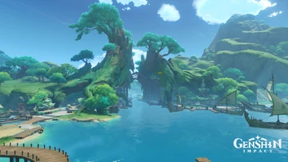

Sumeru
La nación de eruditos situada en el medio oeste de Teyvat.
Una tierra exótica en la que coexisten exuberantes bosques tropicales y áridos desiertos, donde crecen y se marchitan innumerables frutos de la sabiduría. Todo viajero que llegue a esta nación podrá adquirir valiosos conocimientos atravesando el bosque y subiendo los escalones que conducen hacia el conocimiento o adentrándose en el desierto y descubriendo sus antiguas ruinas. Es la Cuarta Nación de las 7 naciones de Teyvat, siendo representada por la Sabiduria y el elemento Dendro.
La ciudad principal se encuentra en lo alto de un enorme árbol, un centro de conocimiento y tecnología avanzada impulsada por el Academia, la institución más prestigiosa de estudio en Teyvat.
La Academia de Sumeru es el principal órgano de gobierno de Sumeru, así como el instituto más prestigioso de todo Teyvat, ubicado en medio del tronco del Árbol Sagrado en la Ciudad de Sumeru. Es particularmente conocido por sus estudios de artes arcanas y registros históricos.
La gente de Sumeru valora profundamente el conocimiento, y su religión gira en torno a la Sabiduría y su diosa Kusanali. Sin embargo, existe un conflicto interno entre la fe y la ciencia dentro de la Academia.
El Puerto Ormos es una subzona ubicada en el valle de Ardravi, Bosque Dharma, Sumeru . Puerto Ormos es el puerto más grande de Sumeru y sirve como centro de comercio y transporte. Se encuentra bajo dos árboles gigantes, entre los cuales corre un río que une la ciudad de Sumeru con el puerto.

La Aldea Vimara es una subárea del Valle Ardravi, que está dentro de la selva del dharma de la Nación de Sumeru, a pesar de que sea una aldea norma, esta esocnde uno de los mayores secretos acerca de ------.
Proximamente...
Proximamente...
Más detalles
Ciudad de Sumeru

Academia de Sumeru

Cultura y religión

Puerto Ormos
Aldea Vimara

Lugares e ¿Historia?
Musica, Personajes, Dominios, Jefes y artefactos